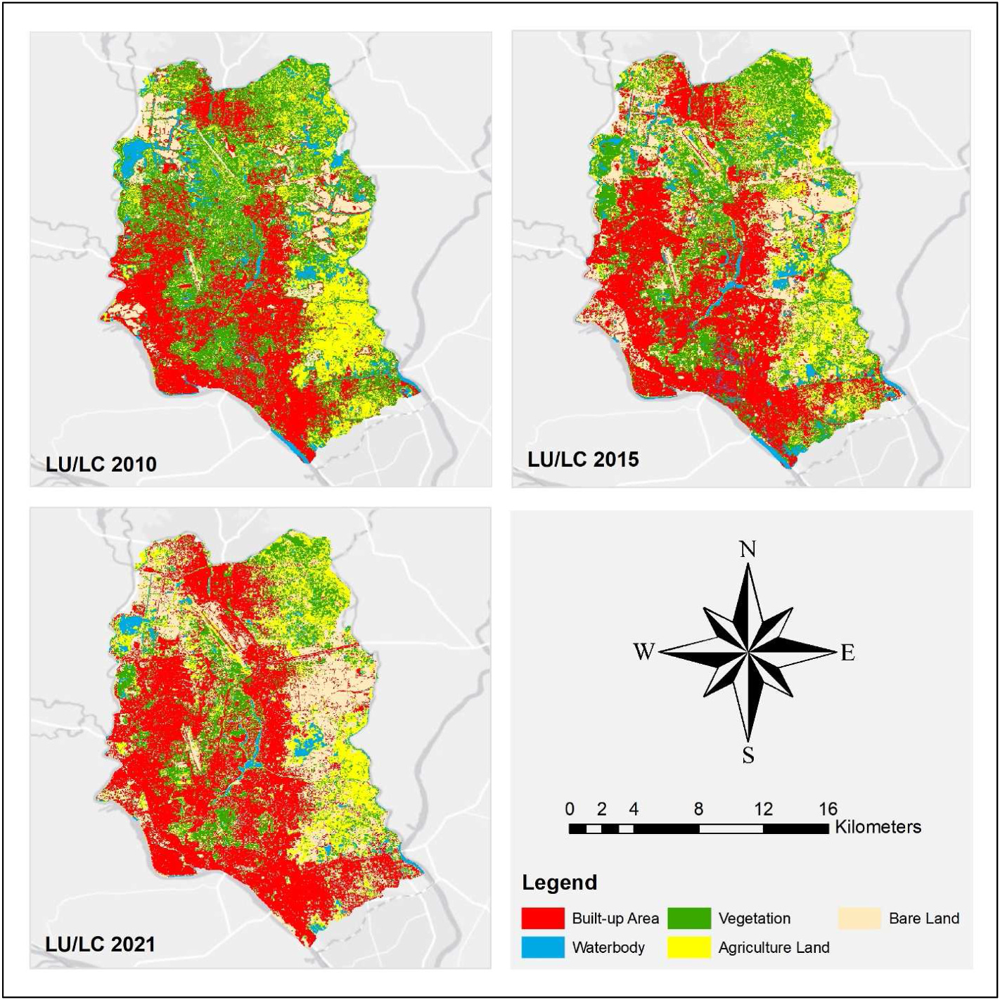
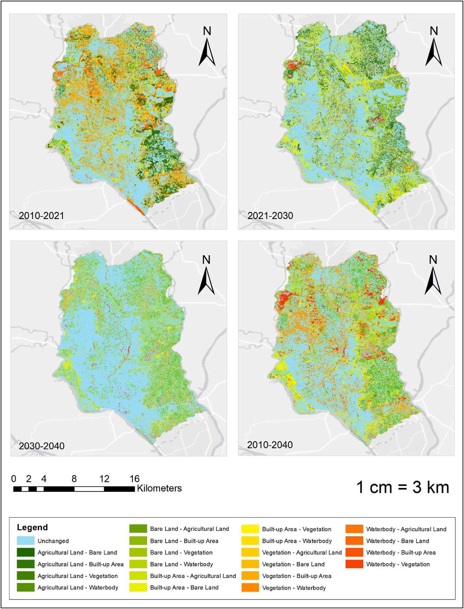
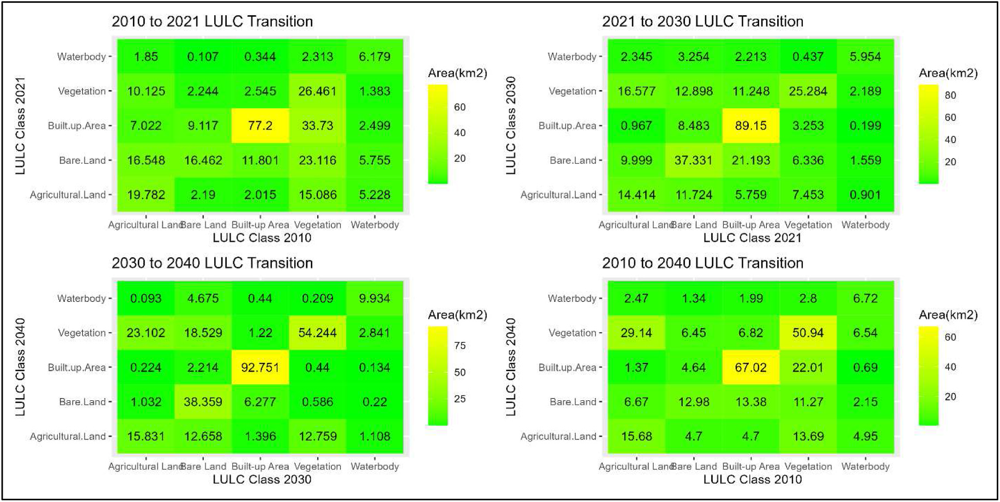
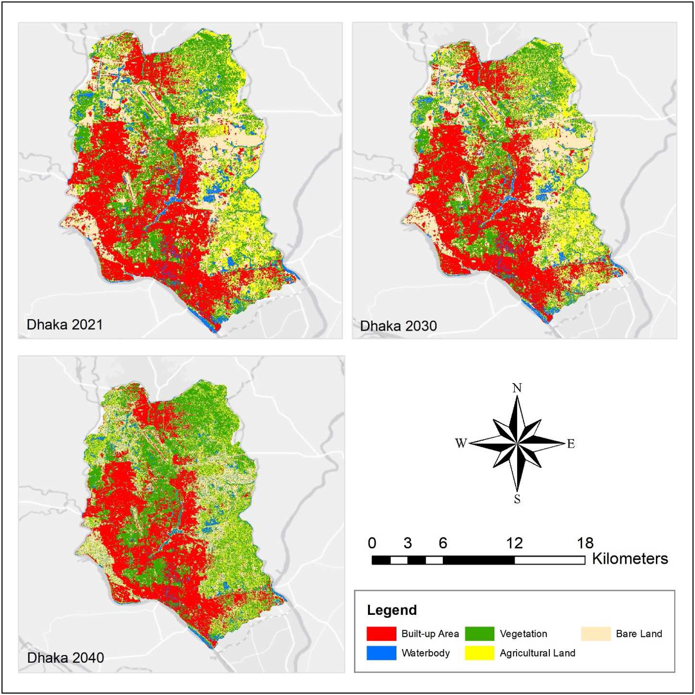
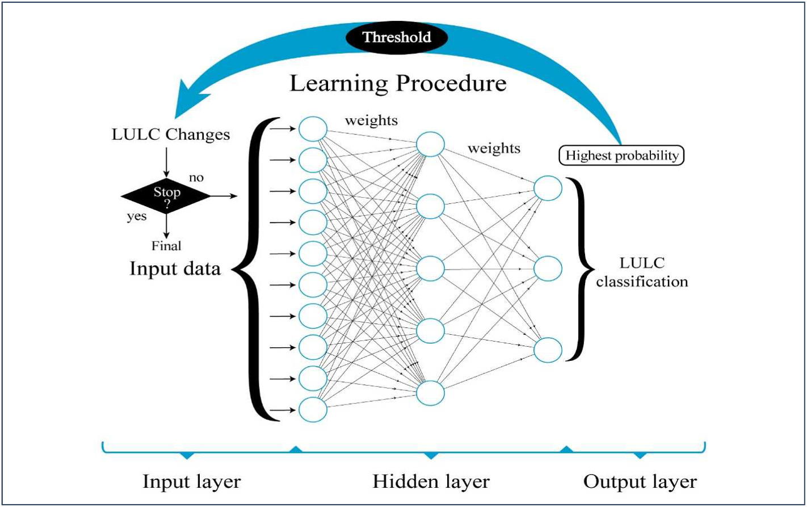
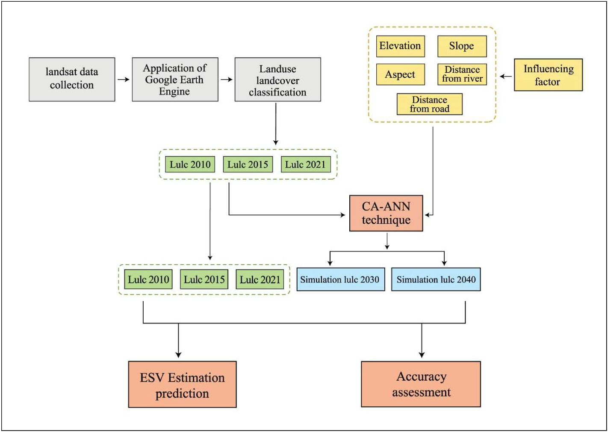

Dynamic assessment and prediction of land use alterations' influence on ecosystem service value in Dhaka City, Bangladesh, from 2010 to 2040. A pathway to environmental sustainability.
Explore the Study ↓A multi-stage workflow integrating satellite imagery processing, machine learning classification, ANN-CA simulation, and ecosystem service valuation for Dhaka City from 2010 to 2040.
Landsat 5 TM (2010) and Landsat 8 OLI (2015, 2021) surface reflectance images obtained via Google Earth Engine. DEM data from USGS; road and river networks from HydroSHEDS and BBBike; population data from DIVA-GIS.
GEE cloud filtering applied to Landsat imagery. Vector shapefile of Dhaka used for extraction. Population data downscaled to 30m resolution. Surface reflectance images corrected for atmospheric influences.
Random Forest classifier on GEE trained on 2,913 sample points across five LULC classes: built-up, water body, vegetation, agricultural land, and bare land. 80/20 train-test split with Google Earth validation.
Cellular Automata integrated with Artificial Neural Network (multilayer Perceptron, 1000 iterations, 10 hidden layers) via QGIS MOLUSCE plugin. Five spatial parameters used as input for LULC prediction to 2030 and 2040.
Confusion matrix evaluation with producer's accuracy, user's accuracy, overall accuracy, and Kappa coefficient. Simulated 2021 map validated against classified 2021 map for model verification.
Ecosystem Service Values calculated using Costanza et al. (1997) methodology with Akber et al. (2018) coefficients. Five LULC classes mapped to equivalent biomes. Sensitivity analysis with ±50% coefficient variation.
The capital city spanning 300 km² along the Buriganga River, situated between 23°40' to 23°51'N and 90°19'30" to 90°30'30"E on the Modhupur Terrace.
Tracking the interplay between built-up expansion, vegetation loss, agricultural conversion, and water body decline across the study period and predicted future.
Built-up area surged from 31% to 42% by 2021, then is predicted to decline to ~32% by 2040 as vegetation recovers.
Proportional breakdown of all five LULC classes shows the dramatic shift from vegetation-dominant to built-up-dominant landscape.




Economic valuation of ecosystem services across five LULC categories using the Costanza et al. (1997) methodology with local coefficients adapted from Akber et al. (2018).
ESV declined from $172.66M to $144.23M by 2030, then shows partial recovery to $160.23M by 2040.
Built-up areas and vegetation contribute the most to total ESV. Water bodies and agricultural land show the steepest decline.
| LULC Type | Equivalent Biome | ES Coefficient (US$ ha-1 yr-1) |
|---|---|---|
| Agricultural Land | Cropland | 5,567 |
| Water Body | Wetland | 12,512 |
| Vegetation & Forest | Tropical Forest | 5,328 |
| Built-up Area | Urban | 6,661 |
| Bare Land | Desert | 0 |
Overall accuracy ranged from 89% to 96% for classified maps, with Kappa coefficients between 0.86 and 0.94, indicating strong classifier agreement across all study years.
| Year | Built-up UA/PA | Waterbody UA/PA | Vegetation UA/PA | Agri. Land UA/PA | Bare Land UA/PA | Overall Accuracy | Kappa |
|---|---|---|---|---|---|---|---|
| 2010 | 100 / 100 | 96 / 91 | 79 / 86 | 88 / 84 | 96 / 100 | 89% | 0.86 |
| 2015 | 92 / 85 | 100 / 100 | 93 / 89 | 71 / 83 | 81 / 87 | 91% | 0.88 |
| 2021 | 97 / 99 | 100 / 100 | 91 / 97 | 94 / 83 | 98 / 96 | 96% | 0.94 |
| 2030* | 96 / 86 | 81 / 80 | 83 / 92 | 55 / 72 | 66 / 65 | 80% | 0.74 |
| 2040* | 97 / 75 | 74 / 72 | 58 / 99 | 35 / 45 | 58 / 43 | 69% | 0.59 |
* Simulated years. UA = User's Accuracy (%), PA = Producer's Accuracy (%).


What thirty years of satellite monitoring and simulation revealed about the health and trajectory of Dhaka's urban ecosystem.
Built-up areas surged from 92.5 km² (31%) in 2010 to 127.5 km² (42%) by 2021, primarily at the expense of vegetation and agricultural land. This growth was concentrated in the western and northern peripheries.
Vegetation coverage plummeted from 99.75 km² to 43.19 km² between 2010 and 2021. The largest single transition was 33.73 km² of vegetation converting directly into built-up areas.
Total ESV dropped from $172.66M (2010) to a projected low of $144.23M (2030), a net loss of $12.43M by 2040. Water bodies ($7.64M) and agricultural land ($6.89M) suffered the steepest declines over the 30-year period.
Water bodies shrank from 21.34 km² to 10.85 km² (2010-2021), destroying natural drainage. This triggered frequent urban flooding and waterlogging, with wetland ESV coefficient at $12,512/ha/yr being the highest among all classes.
ANN-CA predictions indicate built-up areas declining to ~32% by 2040, with vegetation rebounding to 33%. Total ESV is projected to partially recover to $160.23M, suggesting growing sustainability awareness.
The 2021 classified map achieved 96% overall accuracy with a Kappa of 0.94. The CA-ANN model validation confirmed robust predictions, providing a reliable framework for future LULC and ESV forecasting.
Environmental and Sustainability Indicators 21 (2024) 100319
This study investigated LULC changes in Dhaka City, Bangladesh, from 2010 to 2021 and forecasted their future impacts on Ecosystem Services in 2030 and 2040. Landsat images were processed using the Google Earth Engine platform, and a cellular automata technique was integrated with an Artificial Neural Network for LULC mapping and prediction.
Results showed an increase in built-up areas from 31% to 42% between 2010 and 2021, with a projected decrease to 34% and 32% in 2030 and 2040, respectively. Water bodies, vegetation, and agricultural land declined from 2010 to 2021 but are expected to increase in 2030 and 2040, indicating a growing awareness of the need for a sustainable environment.
The value of ES is predicted to drop from $172.66M to $160.23M over thirty years (2010-2040), primarily due to the degradation of water bodies ($7.64M) and agricultural land ($6.89M). The projected increase in natural land covers by 2040 suggests a potential for recovery and enhanced resilience in the urban ecosystem.
Read the full paper →